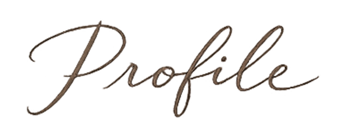
プロフィール
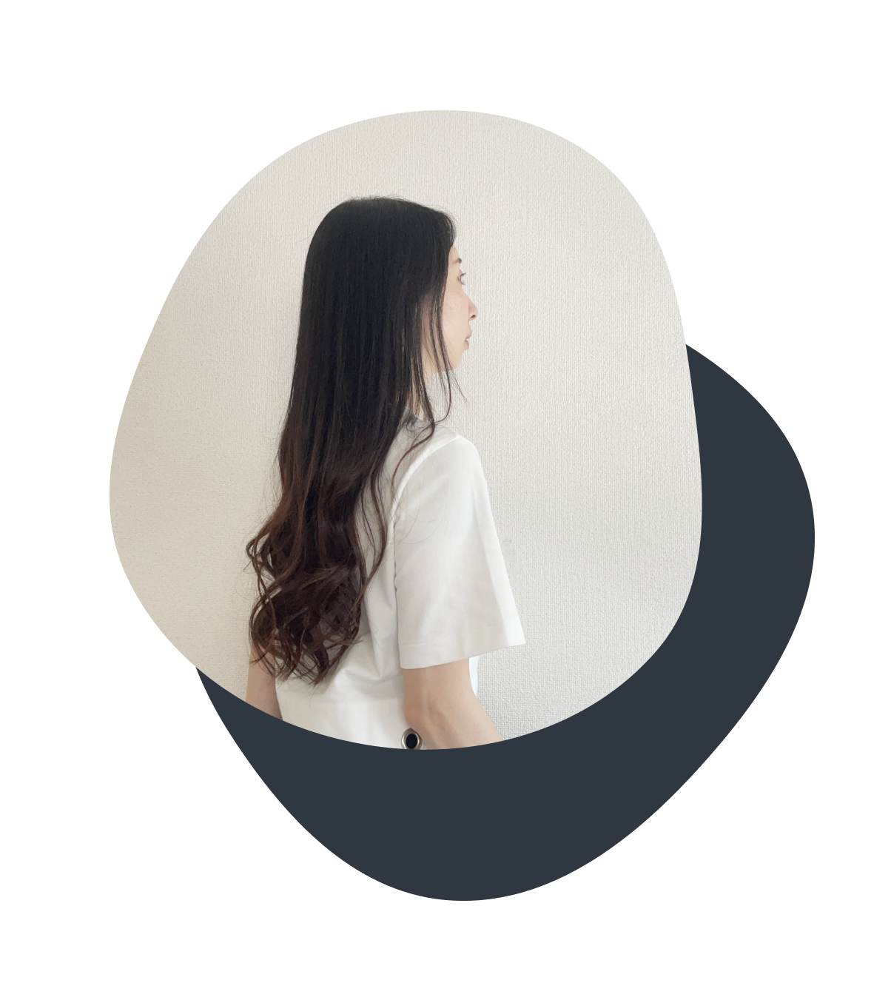
秋山 愛
akiyama ai
1986年生まれ。愛知県出身。東京都在住。
大学卒業後、港湾運送業、食品メーカー、自然エネルギー関連商社にて、
貿易業務、調達購買業務に従事。
SNSでWeb制作という働き方を知ったことをきっかけに、学習を始めました。
制作を重ねる中で、コードを一つひとつ積み上げながらサイトを構築していく工程にやりがいを感じるようになり、完成したサイトが公開された際には大きな達成感を得ています。
現在はコーディング案件を中心に活動をしておりデザインの再現性はもちろん、保守性や拡張性も意識した実装を心がけています。
コーディングだけでなくwebデザインについても研鑽を積み、上流から下流まで一気通貫でサポートできる体制を整えています。
「作って終わり」ではなく、その先の運用まで見据えた丁寧な手仕事を。
今後も継続的にスキルを磨きながら、クライアント様の目的達成に貢献できる制作を行っていきたいと考えています。
私の強み
-
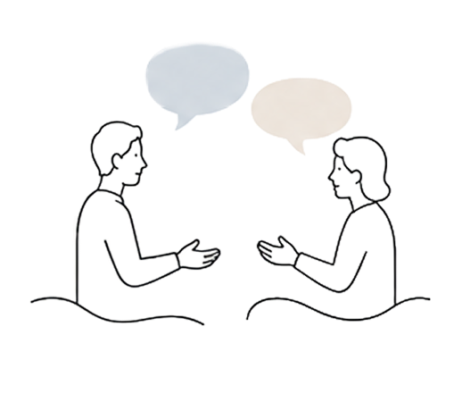
誠実な対話と伴走
技術的な提供だけでなく、プロセスの透明性と誠実なコミュニケーションを最も大切にしています。制作過程では、潜在的な要望を汲み取りや随時進捗を共有することを心がけています。
この姿勢により、これまでのプロジェクトでも「次もあなたにお任せしたい」と高い評価をいただいてきました。
お客様のビジョンを深く理解し、同じ目標に向かって歩む「伴走者」として、確かな信頼を築き上げます。 -
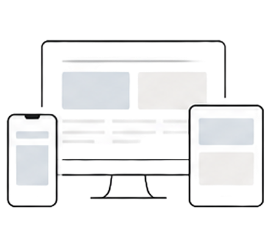
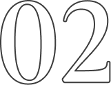
緻密さと俯瞰する目
10年以上の社会人経験で培った「正確性」と、クリエイターとしての「創造性」を使い分けを意識しています。
コーディングにおいては、1px単位のデザイン再現やデバイスごとの細かな挙動に徹底してこだわる一方、プロジェクト全体を俯瞰し、運用のしやすさなど最適解を導き出します。
この視点を自在に切り替えることで、美しさと機能性を兼ね備えた、破綻のないサイト制作を実現します。 -
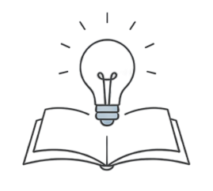
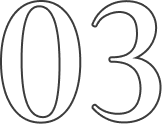
探究心と適応力
新しい技術やツールを迅速に実務へ取り入れることを得意としています。
サイト制作において、高品質な素材が不足している課題に対し、AI（Stable Diffusion等）を活用して独自にイラストやビジュアルを生成し組み込んでいきます。
目まぐるしく変わるWeb業界のトレンドを柔軟に取り入れ、付加価値のある提案を追求し続けます。
私の好きなもの
-
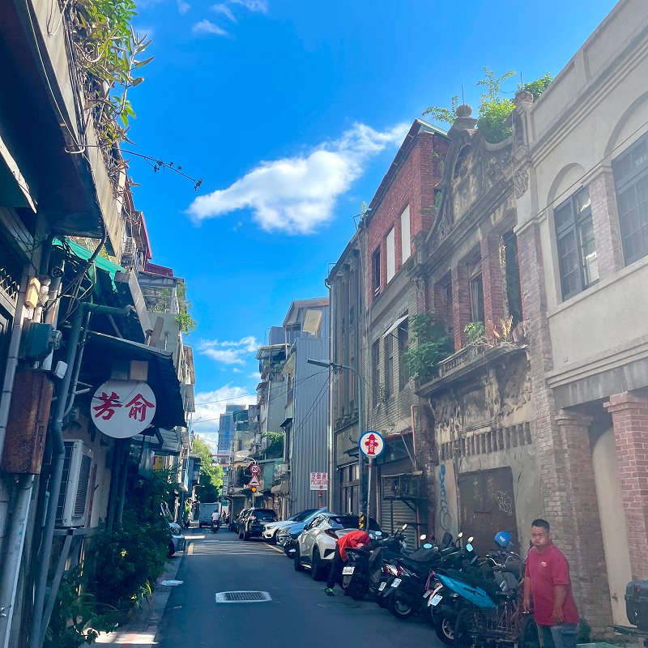
台湾
年に数回台湾へ行っています。おいしいものがたくさんで毎回お腹いっぱいになるまで食べることが楽しみです。 -
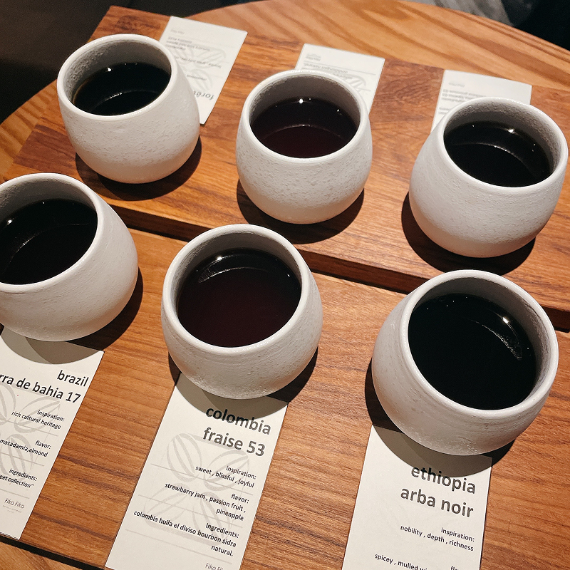
コーヒー
豆を挽いてコーヒーを入れる時間が大好きで、仕事の合間のリラックスタイムです。 -
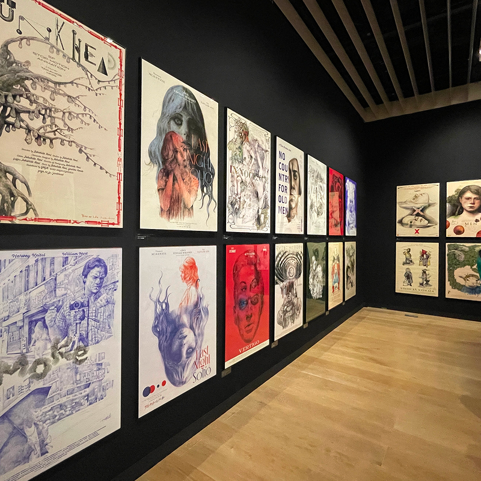
美術館・展示会
いろいろな美術館や展示会へ行くのが好きです。 -
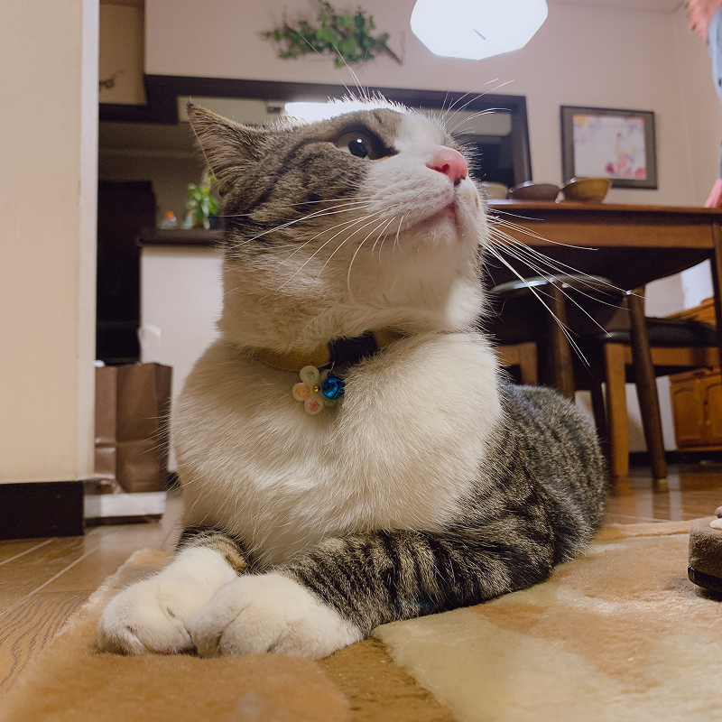
猫
一緒に暮らしていませんが、実家にいる猫に癒されてます。 -
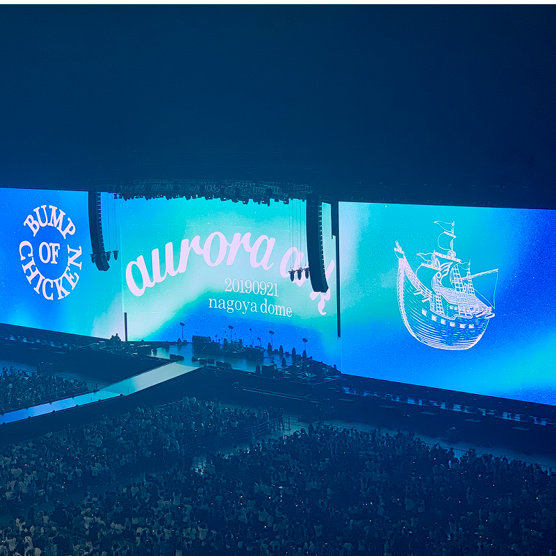
音楽・ライブ
学生時代は吹奏楽をやっており、いろいろな音楽を聴くのが好きです。 好きなバンドのライブに行くのが楽しみです！ -
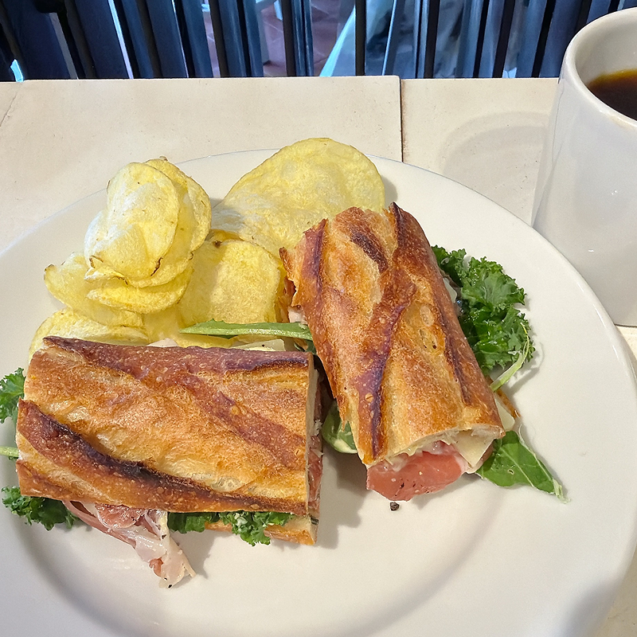
パン屋めぐり
週末はおいしそうなパン屋さんを開拓することにはまってます。